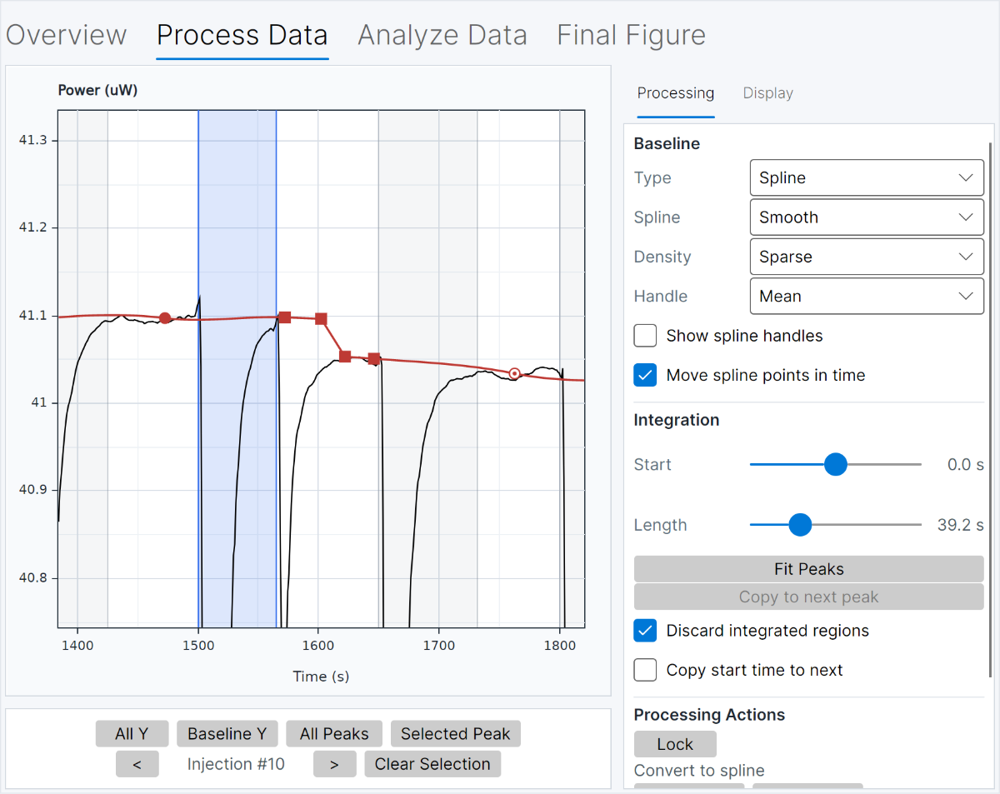
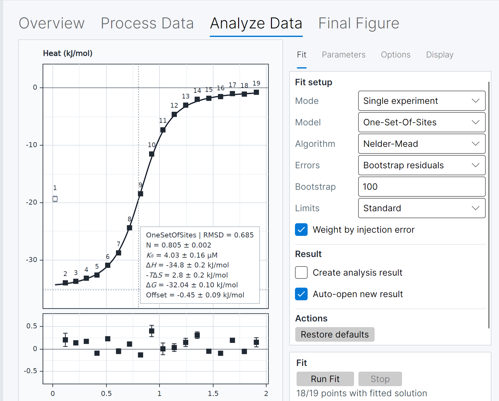

Import and check the experiment
Confirm the sample and titrant, concentrations, temperature, injection settings, units and available reference experiment before changing the data.
ITC data analysis tutorial
Isothermal titration calorimetry data analysis is a chain of decisions: inspect the raw thermogram, establish a defensible baseline, integrate injection peaks, account for matched background or dilution heat, fit a model that reflects the experiment, and review residuals and uncertainty before interpreting the parameters. This practical guide shows how to analyze ITC data in FT-ITC Analysis without treating a single curve as proof that the model or experiment is correct.
Frederik Theisen · FT-ITC Analysis
The short version
A useful ITC analysis keeps the raw measurement, processing choices, fitted model and reporting context connected. The order below is a practical starting point for a representative experiment.
Confirm the sample and titrant, concentrations, temperature, injection settings, units and available reference experiment before changing the data.
Look for stable between-injection regions, plausible peak shapes, baseline drift, irregular injections and signals that may reflect mixing or dilution.
Choose baseline regions and integration windows deliberately, then inspect the resulting heat series before fitting an isotherm.
Use a matched buffer or dilution experiment when the design supports it, and distinguish a physical correction from a model offset.
Fit a model that reflects the chemistry, review residuals and conditional uncertainty, and export a result that retains its analytical context.
01 · Before processing
Before asking what a fitted parameter means, distinguish the different data products that appear during an ITC workflow.
The thermogram records differential power over time. Each injection produces a peak whose direction and size depend on the heat associated with the experiment and the instrument convention.
Peak integration assigns an area to each injection after baseline handling. Those values can contain binding heat as well as mixing, dilution, buffer mismatch, temperature-equilibration and other contributions.
The integrated heats are plotted against a concentration or molar-ratio coordinate to form a binding isotherm. A selected model then estimates quantities such as Kd or Ka, stoichiometry and enthalpy. These are model-dependent estimates, not direct readings from the raw trace.
When you import an experiment, verify cell and syringe identities, sample and titrant concentrations, temperature, buffer and salt composition, injection volume and spacing, units, and whether a matched reference or dilution measurement exists. FT-ITC Analysis supports several common input and export workflows; see the complete ITC workflow and supported file types before interpreting a file.

02 · Thermogram processing
Good ITC thermogram analysis begins with inspection, not automatic fitting. Review stable regions between injections, the approximate direction and shape of each peak, baseline drift, slow return to baseline, irregular or missing injections, and any change that appears only after a particular addition.
A clean-looking trace is not by itself evidence of a valid binding experiment. A signal can also reflect dilution, aggregation, precipitation, buffer mismatch, a concentration error or instrument behaviour. Record what you see and keep the original input file available so that later processing choices remain reversible.
Use the thermogram to decide where processing needs attention; do not adjust the trace only to create a preferred-looking isotherm.
03 · Baseline and integration
The baseline is an estimate of the non-injection power underneath a signal that is only directly observed between injections. Its choice can therefore influence every integrated heat that follows.
Identify sections where the instrument has returned towards its local baseline. Review whether drift, noise or incomplete recovery makes a single baseline strategy unsuitable for the whole experiment.
FT-ITC Analysis provides controls for refining baseline behaviour, including spline-based processing. Use the simplest approach that represents the trace and inspect how changes affect the integrated heats.
Set the start time and integration length so the window captures the intended injection heat without including unrelated recovery or neighbouring events. Consistent settings can be useful, but unusable regions may need to be excluded and documented.
There is no automatic baseline that is correct for every experiment. Compare the resulting heat series with the thermogram and keep a record of excluded injections, baseline choices and integration settings before moving to binding-model fitting.
04 · Background heat
Integrated heats do not automatically equal binding heats. A matched reference can help estimate heat from buffer mismatch, dilution or mixing, but the right correction depends on how the experiment was designed and what the control actually measures.
Distinguish a physical reference subtraction from a mathematical offset in a binding model. A fitted offset can account for a consistent background term; it does not replace a well-designed control experiment.
Check that the cell and syringe contents, buffer, concentration range, temperature and injection schedule are sufficiently matched for the intended comparison.
Decide whether direct, linear-fit or exponential-fit subtraction is scientifically defensible for the available control. Retain the reference data and note how the correction changes the heat series and its uncertainty.
Review the processing workflow →
05 · Binding-model fitting
After inspecting the integrated heats, choose a binding model whose assumptions match the chemistry and experimental design. A one-site ITC model can be a useful teaching example, but it is not a universal default.
Review which quantities are fitted, such as Kd or Ka, stoichiometry and ΔH, and which are derived, such as ΔG and ΔS. Check units, concentration corrections, starting values, limits and weighting. A visually attractive curve does not prove that the model is appropriate.
For related experiments, the global fitting and advanced ITC analysis page describes how shared and experiment-specific parameters can be reviewed together. Begin with the simplest model that can answer the question, then compare alternatives when the data justify doing so.
06 · Fit quality and uncertainty
A fitted parameter is more useful when the evidence around it is visible. Review the data, model, residuals and uncertainty as one result rather than reducing the analysis to a single goodness-of-fit statistic.
Residuals show the difference between observed integrated heats and model-predicted heats. Check whether they are broadly scattered around zero or instead show curvature, a trend, clusters or one injection that dominates the fit. Structured residuals can indicate an unsuitable model, processing choice or experimental problem.
FT-ITC Analysis can expose uncertainty associated with the processed heat values and selected fitting procedure, including injection-error weighting and bootstrap-residual approaches where appropriate. Treat that estimate as conditional on the data processing, model, weighting and resampling choices.
Fitted uncertainty does not automatically account for concentration error, sample heterogeneity, baseline bias, systematic instrument effects or model misspecification. When comparing results, state the assumptions and processing decisions that support the comparison.
07 · Reporting
A publication figure should make the relationship between the raw signal, integrated heats, fitted model and residuals legible. Do not export only a final parameter table when the processing choices determine how that table was produced.
Retain the original input file, processing settings, baseline and integration decisions, any reference or dilution correction, model name and assumptions, parameter estimates, uncertainty, residuals, temperature and concentration metadata, and the saved FT-ITC project.
Explore the desktop analysis workspace →FT-ITC projects keep the analysis context available for review. Export vector-based publication and supporting figures only after checking that the labels, units, fit and residuals describe the same processed result.
Every screenshot in this tutorial is an interface illustration from the existing site, not a worked dataset or a numerical result.
Troubleshooting
Difficult data are often a reason to revisit the experiment and processing decisions, not simply to add a more complex model.
Recheck the baseline regions, injection spacing and equilibration behaviour. Compare alternative processing choices without hiding regions that carry useful information.
Inspect whether integration windows are capturing the intended events. Exclude an injection only with a documented reason and consider whether the underlying experiment can support a quantitative fit.
Check concentration range, signal size, reference heat and model assumptions. A more complicated fit cannot recover information that the experiment did not measure.
Compare the residual pattern with the thermogram, integration choices and plausible alternative models before treating the fitted parameters as interpretable.
Frequently asked questions
Inspect the thermogram and experimental context, correct the baseline, integrate injection peaks, apply a justified background correction, fit a suitable binding model, review residuals and uncertainty, and export the result with its processing history.
The baseline is used to estimate the non-injection power underneath each peak. A different baseline can change the integrated heats and therefore the fitted isotherm, so the choice should be reviewed against the thermogram and documented.
Not every experiment needs the same correction. Use a matched reference when the experimental design supports the comparison, and distinguish measured background heat from an offset term included in a model.
Residuals should be inspected for structure rather than judged by a single threshold. Trends, curvature, clusters or a dominant injection can indicate that processing, model choice or experiment quality needs further review.
.itc file?FT-ITC Analysis supports the file workflows described on the Workflow page. Confirm the specific input type and what it contains before assuming that every project file preserves every raw and processed object.
Continue the workflow
Use the workflow page for supported files, processing and export details. Use the desktop app to work through a local analysis, and move to advanced analysis when related experiments need to be interpreted together.